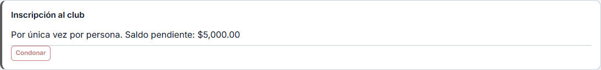
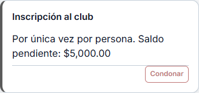
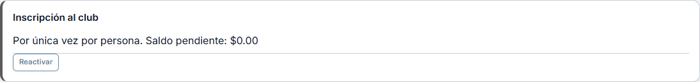
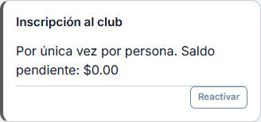
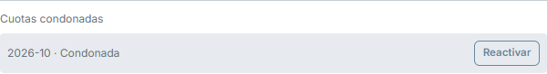
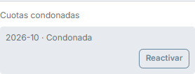
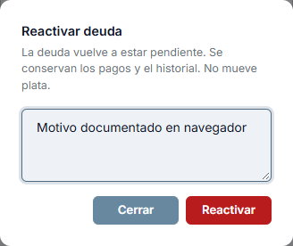
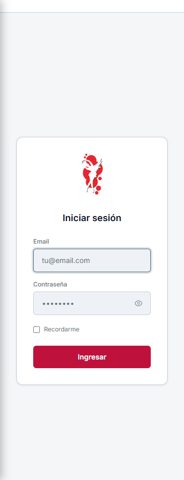

T33 · Condonar y Reactivar
Respuestas reales de Wings. Escritorio 1366 y celular dentro de un marco de 360.
Informe, bordes y pruebas
Inscripción pendiente
Escritorio
Celular 360
Inscripción perdonada
Escritorio
Celular 360
Cuota perdonada
Escritorio
Celular 360
Motivo y confirmación
CondonarReactivar
Login de control
Celular real 360